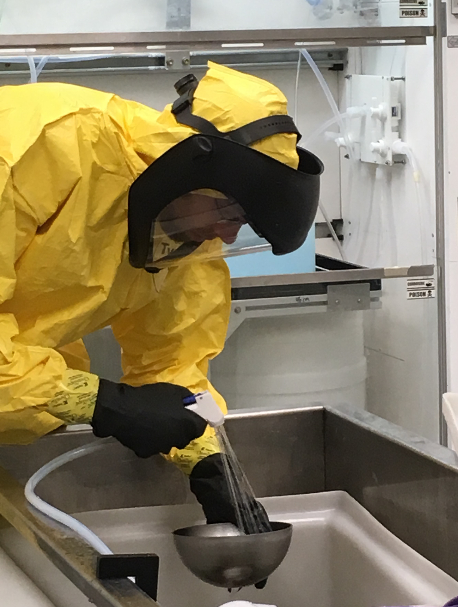

TRIUMF Work Term
From Jan - Apr 2017 I worked as an engineering intern at TRIUMF,
Canada's national nuclear and particle physics laboratory.
I built electromagnetic simulations for the particle accelerator team
and assisted maintenance and installation of the accelerators.
Top skills and knowledge gained:
Top skills and knowledge gained:
- CAE simulation and meshing, specifically with COMSOL Multiphysics and MATLAB
- Handtool use (ex. wrenching)
- Materials science: chemical etching, RRR measurement, superconductor science
Electromagnet Design Simulations
I used COMSOL Multiphysics (AC/DC Module) to optimize the magnetic fields of a custom electromagnet
for the β-NQR materials science spectrometer. I wrote MATLAB scripts to
confirm the results from COMSOL.
Specifically, my role was to optimize the dimensions of the magnet such that the magnetic fields at the centre of the magnet met design requirements. I also checked error cases to ensure the magnet design could tolerate assembly error.
This project was relatively open-ended, as there were many different possibile designs. I learned the importance of simplifying large problems into small models that can be economically solved - instead of using full 3D models, for example, I used an axisymmetric slice with a fine mesh only in critical areas.
Here is my design report.
I also wrote a simulation manual to help team members learn how to use and modify my simulation.
Accelerator-Degradation Investigatory Simulations
Using COMSOL (RF Module), I investigated the inexplicable cause of quality factor decrease
in a superconducting accelerator. My study was inconclusive, but helped eliminate
possible causes of the problem. Results from my study were presented at the TESLA Technology Collaboration's 2017 annual meeting, as the problem has been experienced at other labs around the world.
Particle Accelerator Maintenance & Installation
Disassembling accelerators in the clean room, installing new parts,
milling various parts in the machine shop.

Materials Science
Chemical etching of accelerator cavities:Assisted Buffered Chemical Polishing (BCP) of superconducting materials. Learned how and why chemical etching is conducted.  Residual-Resistivity Ratio (RRR) measurement:
RRR measurement is used to determine the purity grade of a metal. We measured the purity of niobium superconductor samples by measuring the material's electrical resistance above and below 9.6 K.